Passenger Compartment/Roof Component Views
Passenger Compartment/Roof Component Views
Passenger Compartment SIR Components (LHD)
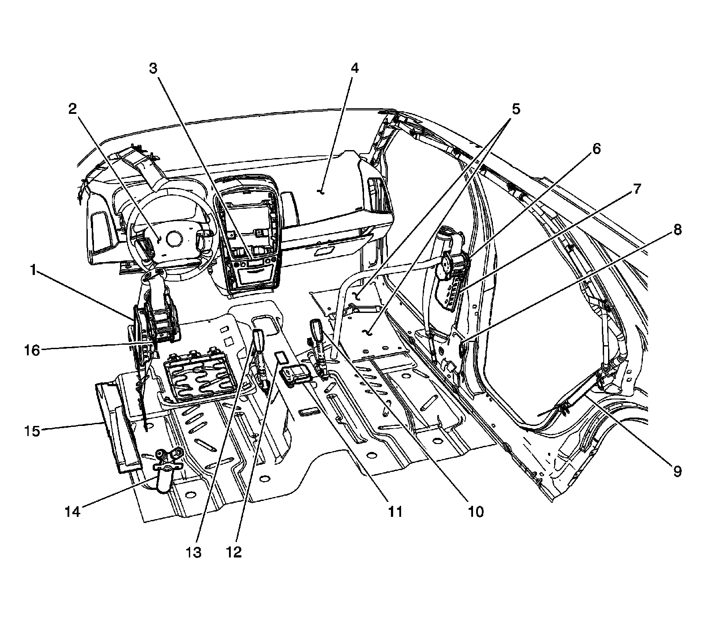
1 - Inflatable Restraint Side Impact Module - Left
2 - Inflatable Restraint Steering Wheel Module
3 - Inflatable Restraint Instrument Panel Module Indicator
4 - Inflatable Restraint Instrument Panel Module
5 - Inflatable Restraint Front Passenger Presence System (PPS) Sensor
6 - Seat Belt Retractor - Right
7 - Inflatable Restraint Side Impact Module - Right
8 - Inflatable Restraint Side Impact Sensing Module (SISM) - Right
9 - Inflatable Restraint Roof Rail Module - Right (AY0)
10 - Seat Belt Switch - Right
11 - Inflatable Restraint Sensing and Diagnostic Module (SDM)
12 - Rollover Sensor
13 - Seat Belt Switch - Left
14 - Inflatable Restraint Roof Rail Module - Left (AY0)
15 - Inflatable Restraint Side Impact Sensing Module (SISM) - Left
16 - Seat Belt Retractor - Left
Passenger Compartment SIR Components (RHD)
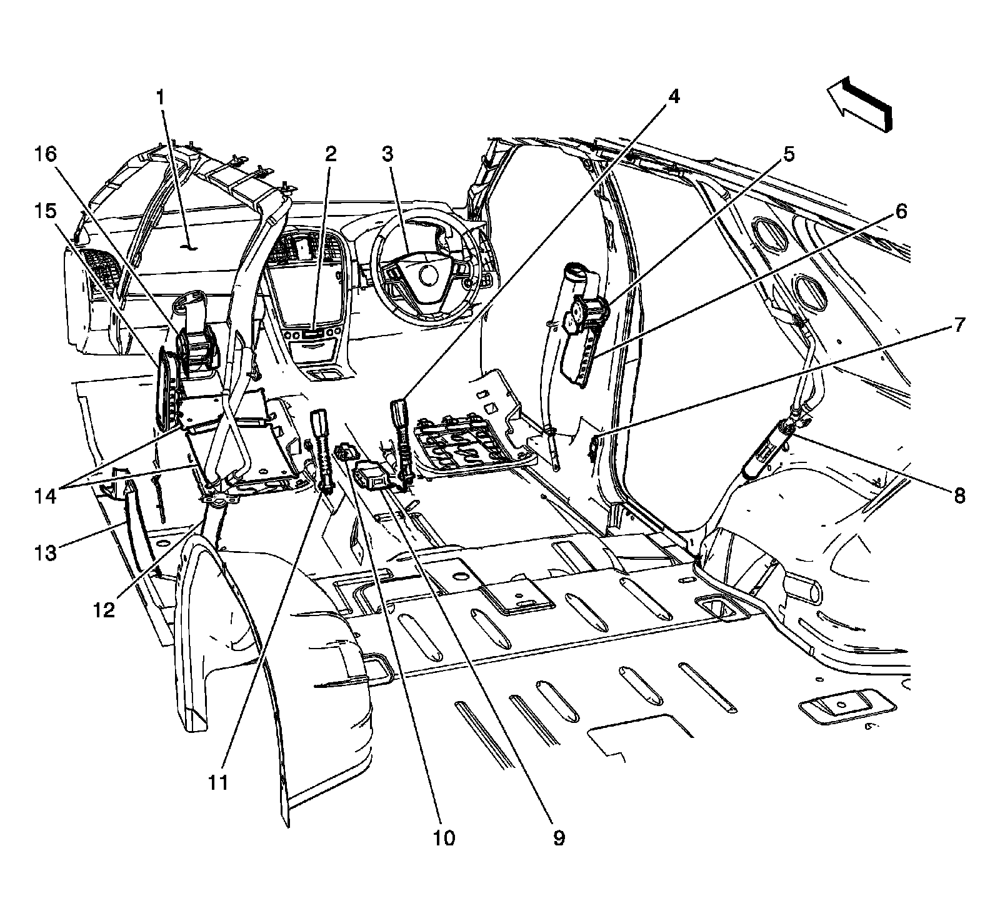
1 - Inflatable Restraint Instrument Panel Module
2 - Inflatable Restraint Instrument Panel Module Indicator (AQS)
3 - Inflatable Restraint Steering Wheel Module
4 - Seat Belt Switch - Right
5 - Seat Belt Pretensioner - Right
6 - Inflatable Restraint Side Impact Module - Right
7 - Inflatable Restraint Side Impact Sensing Module (SISM) - Right
8 - Inflatable Restraint Roof Rail Module - Right (AY0)
9 - Inflatable Restraint Sensing and Diagnostic Module (SDM)
10 - Rollover Sensor
11 - Seat Belt Switch - Left
12 - Inflatable Restraint Roof Rail Module - Left (AY0)
13 - Inflatable Restraint Side Impact Sensing Module (SISM) - Left
14 - Inflatable Restraint Front Passenger Presence System (PPS) Sensor
15 - Inflatable Restraint Side Impact Module - Left
16 - Seat Belt Pretensioner - Left
Entertainment System Components
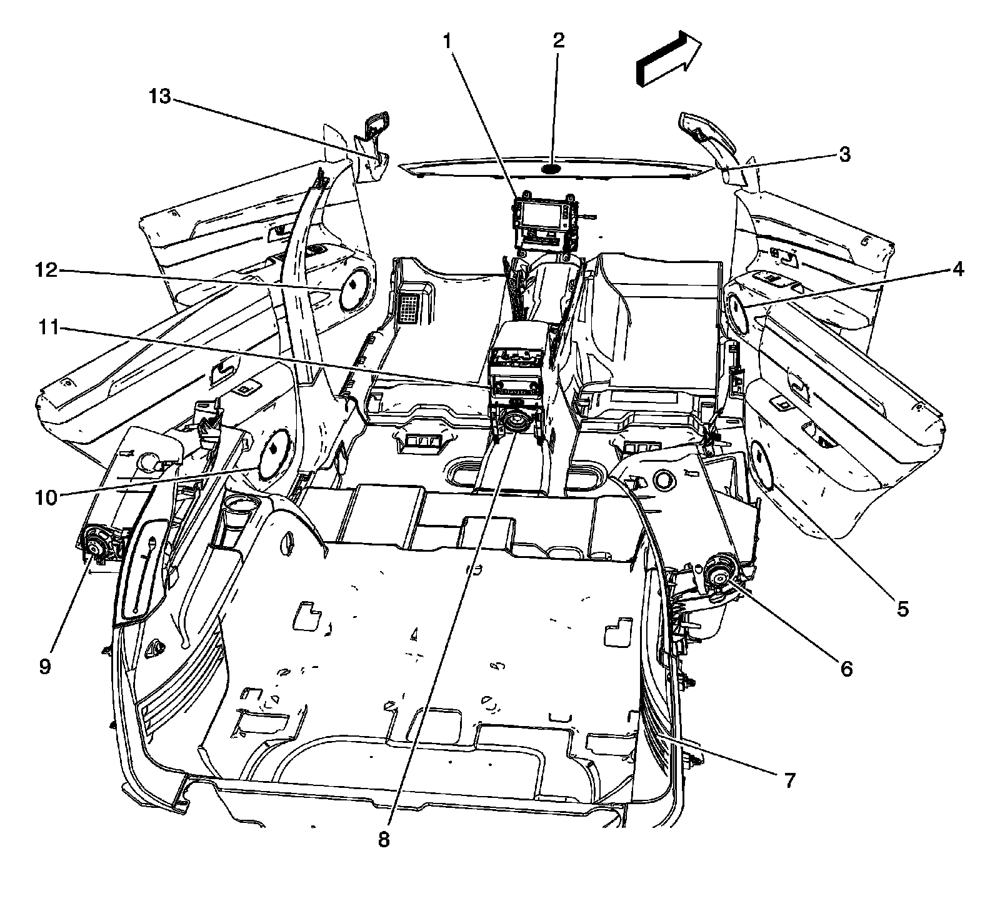
1 - Radio/Navigation Unit
2 - Speaker - Instrument Panel (UQS)
3 - Speaker - Right A-Pillar Tweeter
4 - Speaker - Right Front Door
5 - Speaker - Right Rear Door
6 - Speaker - Right D-Pillar (UQS)
7 - Speaker - Rear Subwoofer
8 - Speaker - Center Console (UQS)
9 - Speaker - Left D-Pillar (UQS)
10 - Speaker - Left Rear Door
11 - Rear Video Display (U42)
12 - Speaker - Left Front Door
13 - Speaker - Left A-Pillar Tweeter
Right Front Floor Pan Components - (RHD)
Yaw and Lateral/Long Acceleration Sensor:
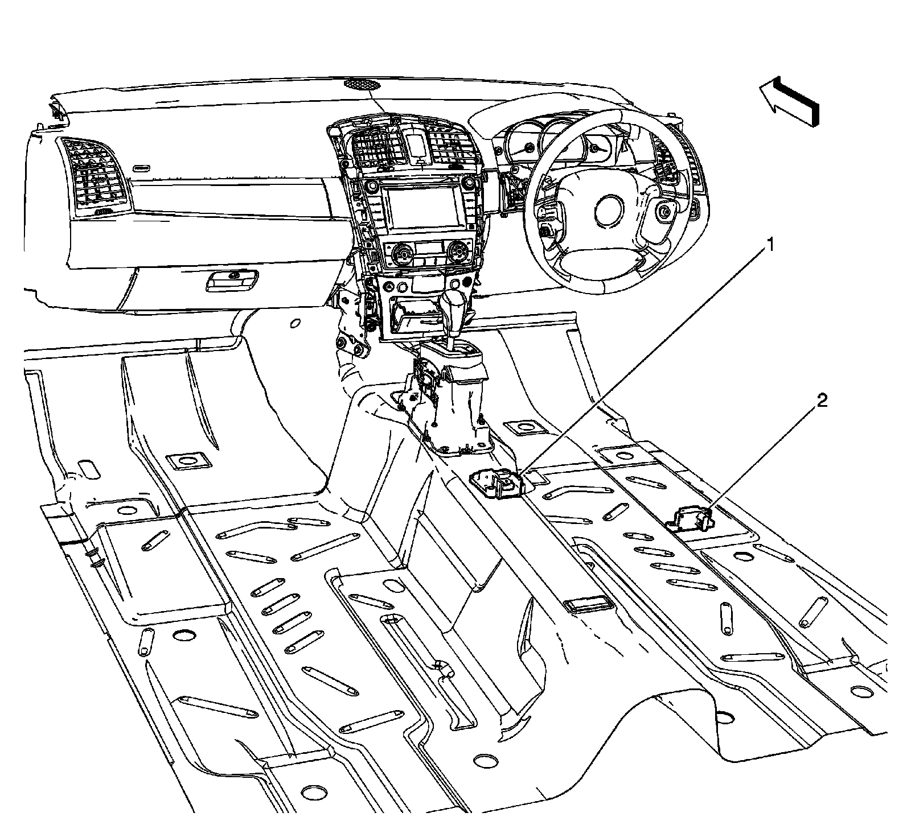
1 - Rollover Sensor
2 - Yaw and Lateral/Long Acceleration Sensor
Below Front Passenger Seat (JL9)
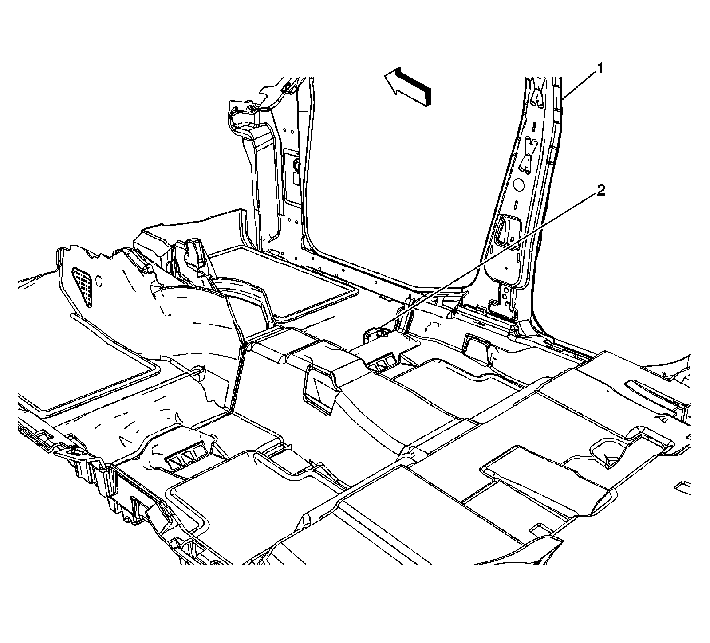
1 - C-Pilar
2 - Yaw Rate and Lateral Acceleration Sensor (JL9)
Overhead Console Components
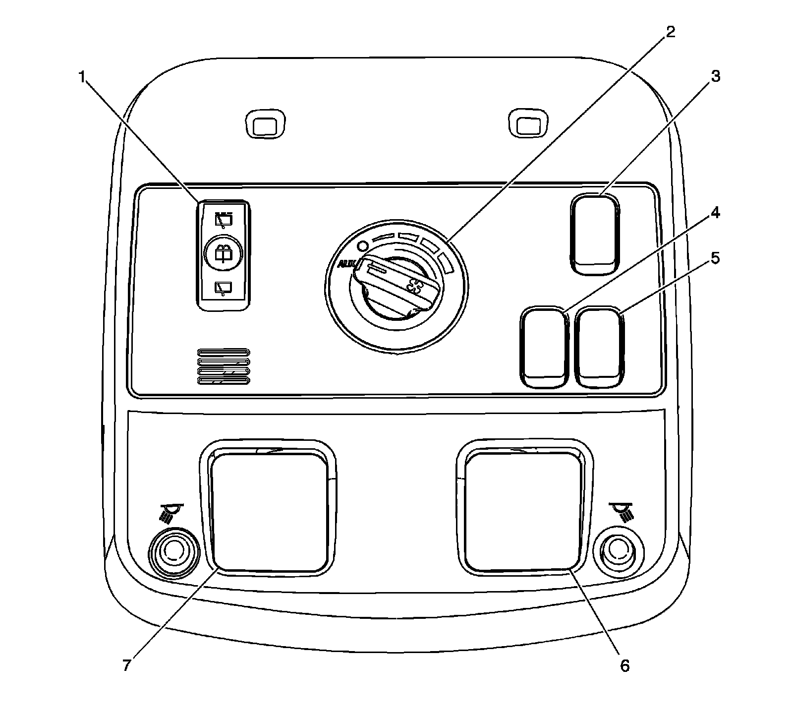
1 - Wiper/Washer Switch - Rear
2 - Blower Motor Switch - Auxiliary (C57)
3 - Rear Sunshade Switch (C3B)
4 - Sunroof Switch (CF5/C3B)
5 - Front Sunshade Switch (CF5/C3B)
6 - Courtesy/Reading Lamp - Front
7 - Courtesy/Reading Lamp - Front
Headliner and Overhead Console Components
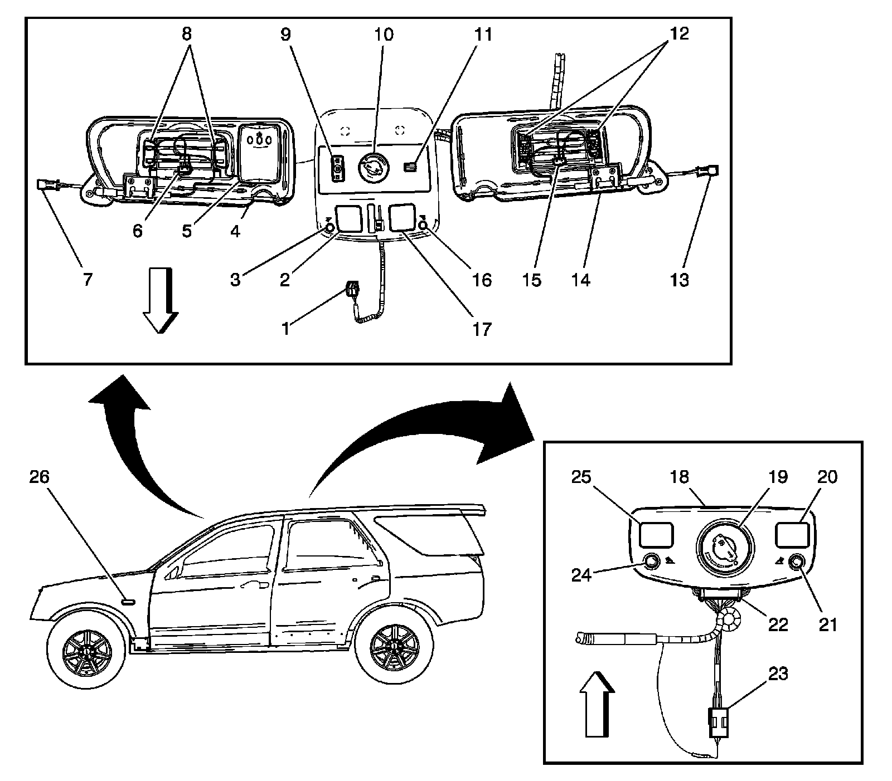
1 - Inside Rearview Mirror (ISRVM) Connector
2 - Courtesy/Reading Lamp - Front Left
3 - Courtesy/Reading Lamp Switch - Front Left
4 - Sunshade - Left
5 - Garage Door Opener (UG1)
6 - Vanity Mirror Lamp Switch - Left
7 - Vanity Mirror Lamp Connector - Left
8 - Vanity Mirror Lamps - Left
9 - Rear Wiper/Washer Switch
10 - Blower Motor Switch - Auxiliary (C57)
11 - Noise Compensation Microphone (UQS)
12 - Vanity Mirror Lamps - Right
13 - Sunshade Connector - Right
14 - Sunshade - Right
15 - Vanity Mirror Lamp Switch - Right
16 - Courtesy/Reading Lamp Switch - Front Right
17 - Courtesy/Reading Lamp - Front Right
18 - Overhead Console Assembly - Center
19 - Blower Motor Switch - Rear Auxiliary (C57)
20 - Courtesy Lamp - Left Center
21 - Courtesy Lamp Switch - Left Center
22 - Blower Motor Switch Connector - Rear Auxiliary (C57)
23 - Courtesy Lamps Connector
24 - Courtesy Lamp Switch - Right Center
25 - Courtesy Lamp - Right Center
26 - Repeater Lamp - Left, Right Similar (T90)
Inside Rear View Mirror and Rear Window Defogger Grid Components

1 - Headlight Sensor
2 - Emergency Button (UE1)
3 - OnStar(R) Call Center Button (UE1)
4 - Answer/End Call Button (UE1)
5 - Cellular Microphone (UE1)
6 - Inside Rearview Mirror (ISRVM) On/Off Button
7 - Inside Rearview Mirror (ISRVM)
8 - Rear Window Defogger Grid
9 - Rear Window Wiper Motor
Headliner Components 1 of 2

1 - Rear Parking Assist (RPA) Display
2 - Courtesy/Reading Lamp - Rear
3 - Courtesy/Reading Lamps - Center
4 - Blower Motor Switch - Auxiliary (C57)
5 - Vanity Mirror Lamp - Right
6 - Front Sunshade Switch (CF5/C3B)
7 - Sunroof Open/Close Switch (CF5/C3B)
8 - Rear Sunshade Open/Close Switch (C3B)
9 - Courtesy Lamp - Right Center
10 - Courtesy Lamp - Left Center
11 - Noise Compensation Microphone (UQS)
12 - Rear Wiper/Washer Switch
13 - Blower Motor Switch - Rear Auxiliary (C57)
14 - Vanity Mirror Lamp - Left
Headliner Components 2 of 2
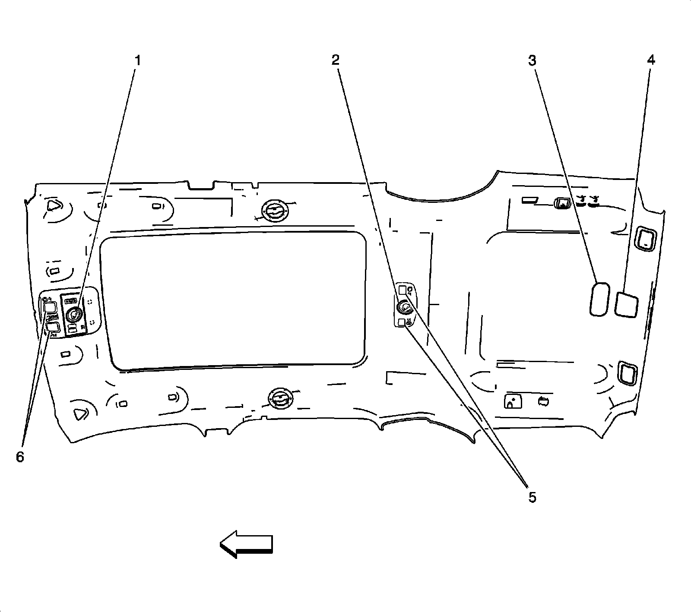
1 - Blower Motor Switch - Front Auxiliary (C57)
2 - Blower Motor Switch - Rear Auxiliary (C57)
3 - Courtesy/Reading Lamp - Rear
4 - Rear Parking Assist (RPA) Display
5 - Courtesy/Reading Lamp - Center
6 - Courtesy/Reading Lamp - Front
Sunroof Components - Mega (C3B)
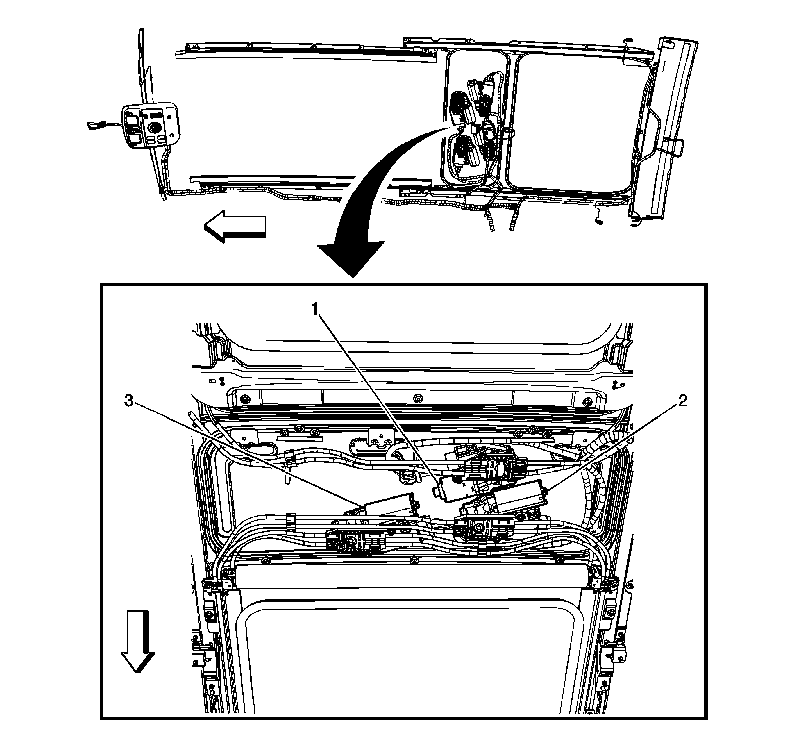
1 - Rear Sunshade Control Module (C3B)
2 - Front Sunshade Control Module (C3B)
3 - Sunroof Control Module
Sunroof Components - Mini (CF5)
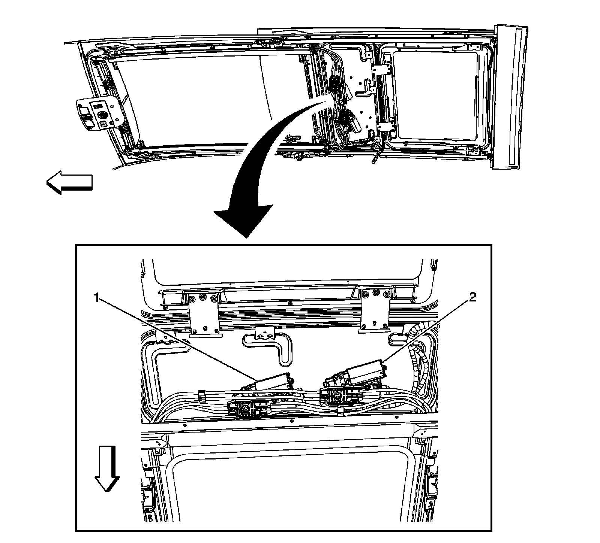
1 - Sunroof Control Module
2 - Front Sunshade Control Module
Driver Seat Components 1 of 2
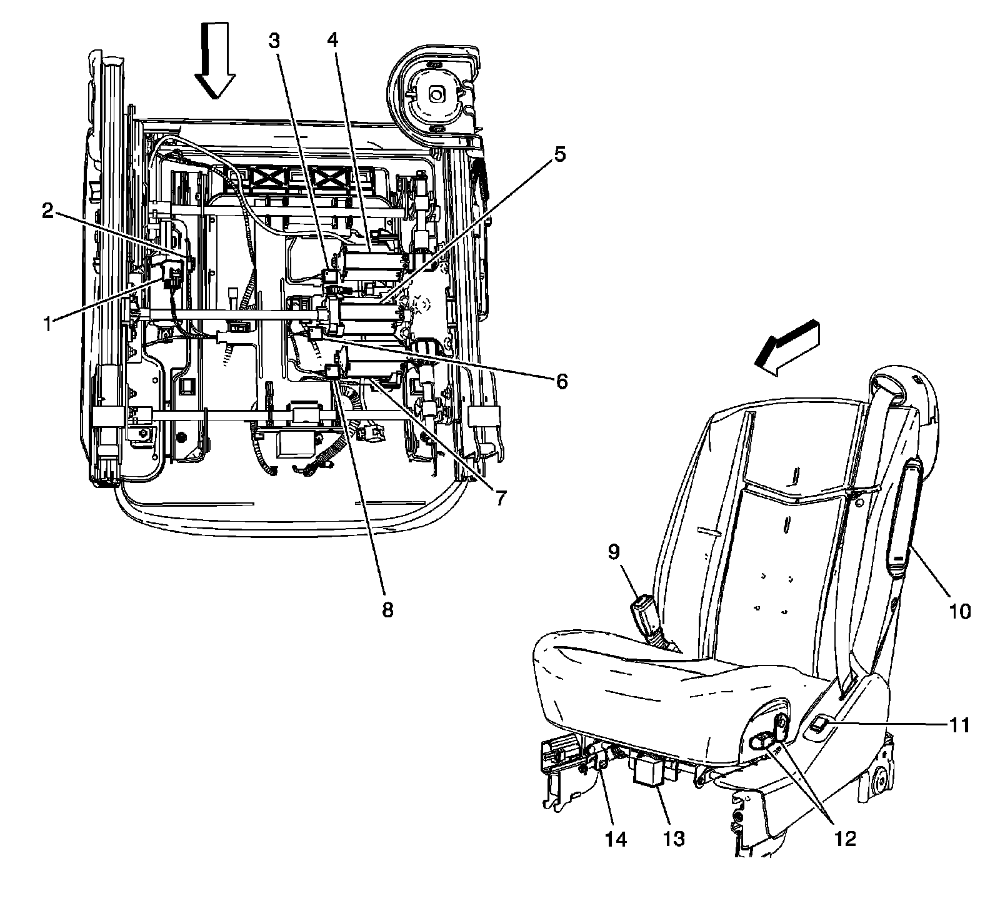
1 - Seat Recline Motor
2 - Seat Recline Motor Position Sensor (A45)
3 - Seat Front Vertical Position Sensor (A45)
4 - Seat Front Vertical Motor
5 - Seat Horizontal Motor
6 - Seat Horizontal Position Sensor (A45)
7 - Seat Rear Vertical Motor
8 - Seat Rear Vertical Position Sensor (A45)
9 - Seatbelt Switch - Left
10 - Inflatable Restraint Side Impact Module - Left
11 - Seat Lumbar Switch
12 - Seat Adjuster Switches
13 - X300
14 - X301
Driver Seat Components 2 of 2
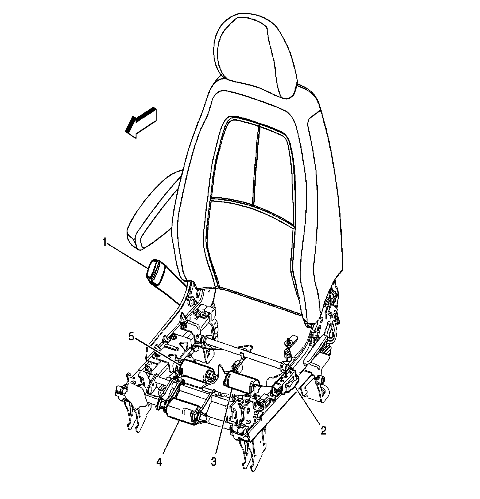
1 - Seat Belt Switch - Driver
2 - Seat Adjuster Switch - Driver
3 - Seat Recline Motor - Driver
4 - Seat Horizontal Motor - Driver
5 - Seat Vertical Motor - Driver
Passenger Seat Components
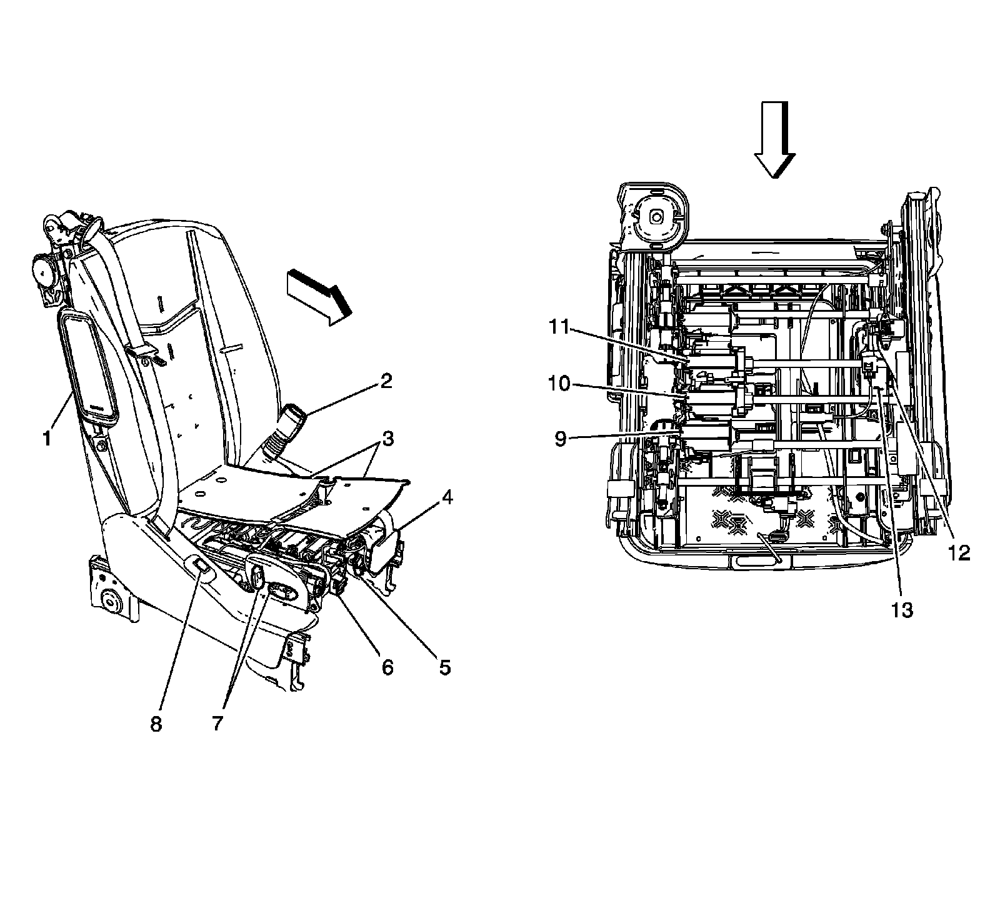
1 - Inflatable Restraint Side Impact Module - Right
2 - Seatbelt Switch - Right
3 - Inflatable Restraint Front Passenger Presence System (PPS) Sensor
4 - Inflatable Restraint Front Passenger Presence System (PPS) Module
5 - X306
6 - X307
7 - Seat Adjuster Switches
8 - Seat Lumbar Switch
9 - Seat Rear Vertical Motor
10 - Seat Horizontal Motor
11 - Seat Front Vertical Motor
12 - Seat Position Switch
13 - Seat Recline Motor
Driver and Passenger Seat Lumbar Components (AL2)
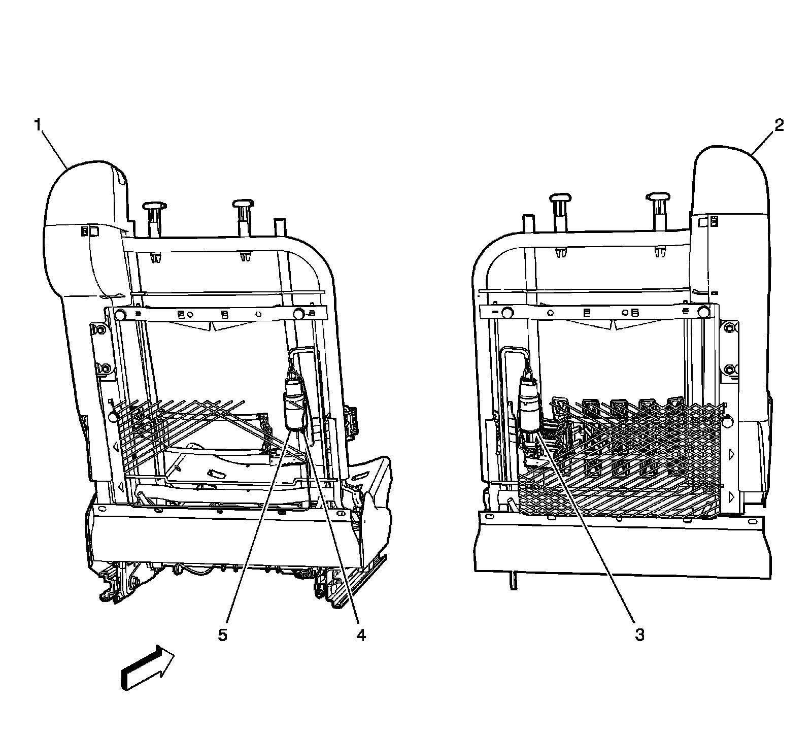
1 - Driver Seat
2 - Front Passenger Seat
3 - Seat Lumbar Motor - Passenger (AL2)
4 - Lumbar Position Sensor - Driver (A45)
5 - Seat Lumbar Motor - Driver (AL2)
Front Heated Seat Components
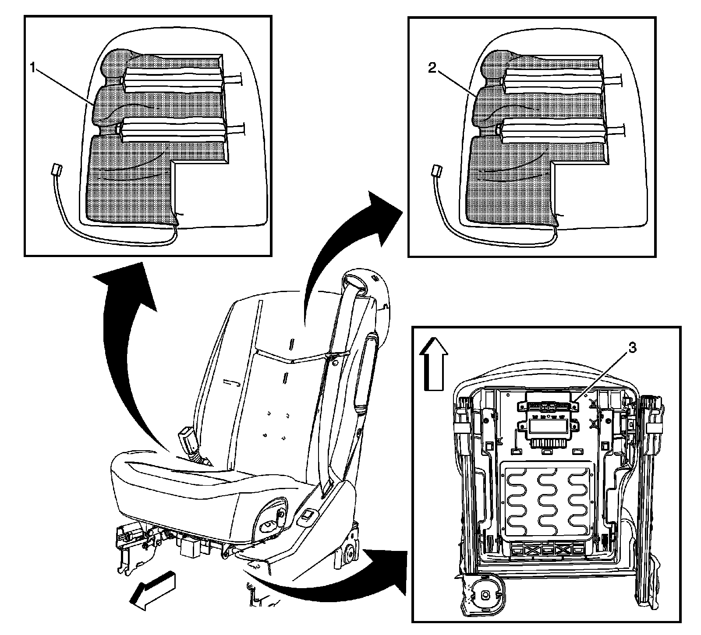
1 - Heated Seat Element - Driver Seat Cushion (KA1), Passenger Side Similar
2 - Heated Seat Element - Driver Seat Back (KA1), Passenger Side Similar
3 - Memory Seat Module (MSM) - (A45)
Third Row Folding Seats Components (AM0)
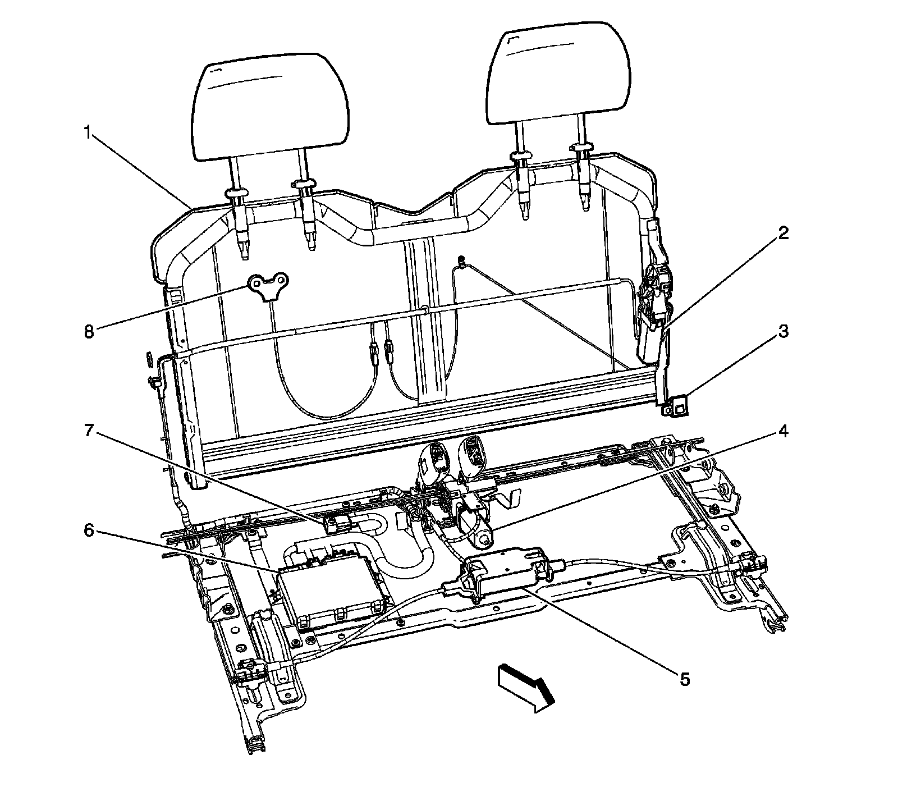
1 - Third Row Seats
2 - Folding Seat Rotation Motor Assembly
3 - Seat Back Load Floor Position Switch
4 - Folding Seat Recline Motor Assembly
5 - Folding Seat Horizontal Motor Assembly
6 - Rear Seat Module
7 - X311
8 - Seat Back Panel Position Switch